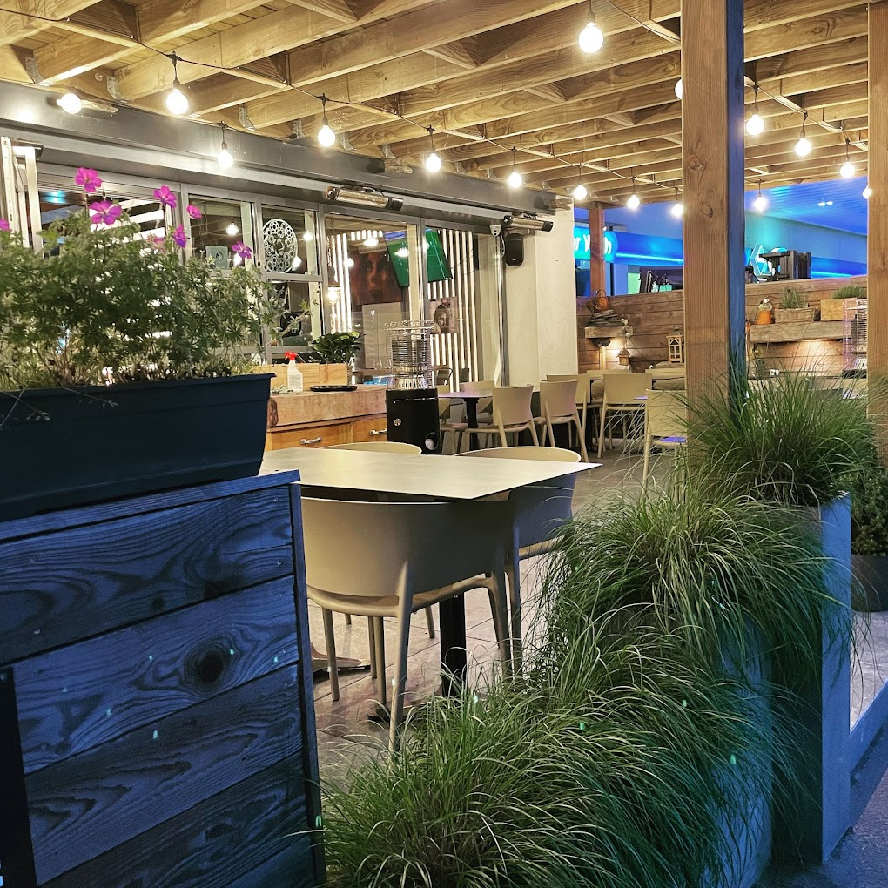
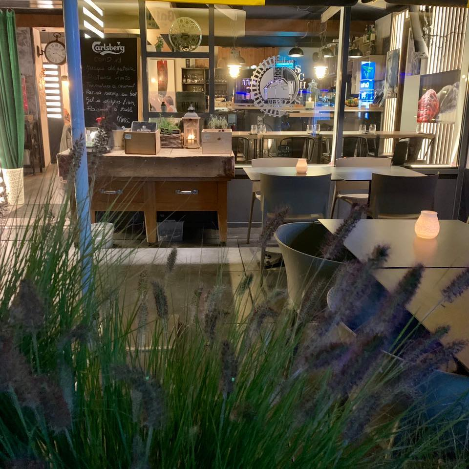

Le Schisteau cœur du pays de l'ardoise
Une brasserie de village, tenue en famille, où l'on cuisine frais et maison à partir de produits du coin — dans l'ancien pays des carrières d'ardoise, à la frontière belgo-luxembourgeoise.

La terrasse couverte, le soirLe goût d'un terroir de pierre
À Rombach-Martelange, la terre a longtemps donné de l'ardoise. Les carrières et le Musée de l'Ardoise racontent encore ce pays de schiste, à cheval sur la frontière. C'est de là que la maison tient son nom — et une certaine idée du travail bien fait, sans esbroufe.
Dans l'assiette, cela donne une cuisine de brasserie honnête : des plats généreux, faits maison, à partir de produits frais et, autant que possible, locaux. La cheffe signe des assiettes fines et parfumées — un tournedos et ses frites maison, un poisson du moment, un risotto — que l'on retrouve d'une saison à l'autre.
On y vient en voisins et en habitués, en couple pour un dîner au calme sous les guirlandes, en famille le dimanche, ou entre deux rendez-vous pour la formule du midi. L'accueil est personnel, la salle intime — parfois pleine, toujours chaleureuse.
Carotte de sondage
Sous les poutres et les guirlandes
La terrasse couverte, ourlée de graminées et de lavande, est la signature de la maison — un coin d'été comme d'arrière-saison, chaleureux le soir venu.

La salle & l'emblème gravéPetit restaurant romantique, cuisine fine et parfumée, service attentionné — des portions généreuses et faites maison. — d'après les avis Google & TripAdvisor